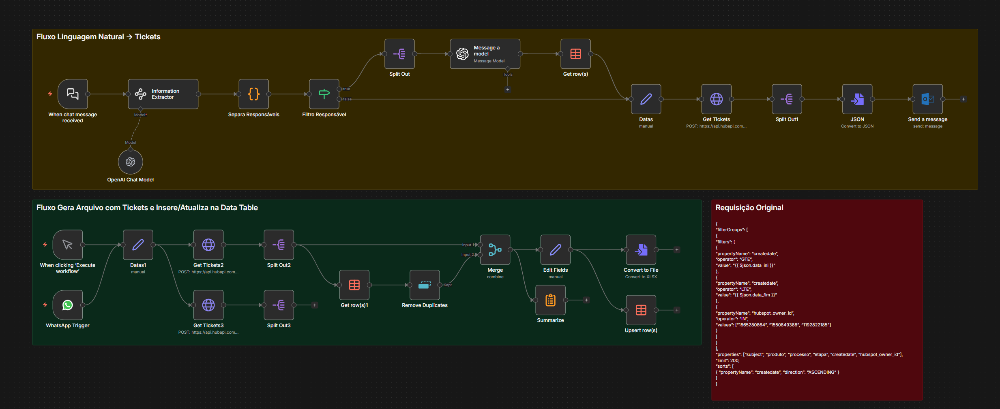

03 de Novembro de 2025
Fluxo de Criação e Acompanhamento de Tickets no HubSpot
Fluxo de automação para criação e acompanhamento de tickets no HubSpot, construído com n8n. Permite criar tickets usando linguagem natural e monitorar o status de tickets existentes.
Ver Projeto